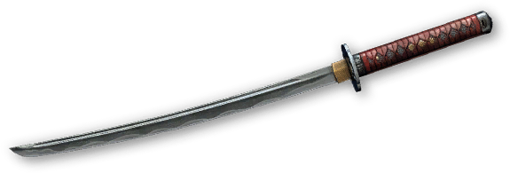
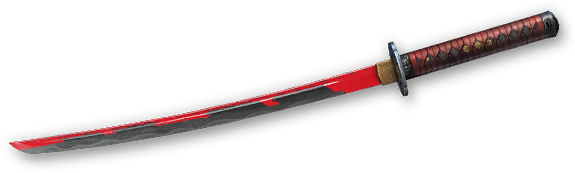
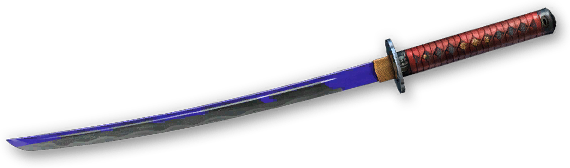
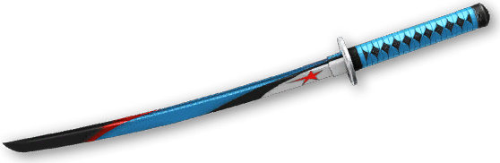
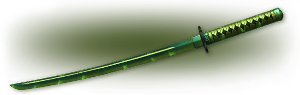

Катана

Описание:
Длинный изогнутый меч с односторонним клинком и прямой рукоятью для двуручного хвата. Это оружие ближнего боя остро настолько, что сильной атакой способно убить бойца в бронежилете «Корунд»!
Использование данного оружия разрешено на турнирах по Warface
Камуфляжи:



